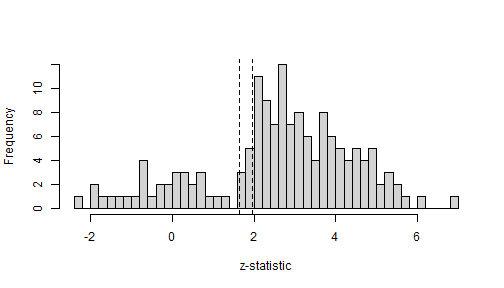
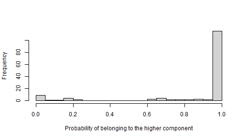
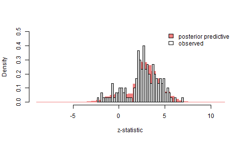
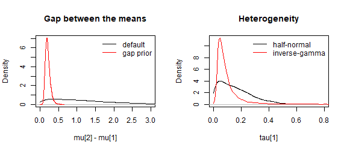

metamixr fits Bayesian random-effects meta-analytic mixture models:
the true effects of the primary studies are assumed to come from a
mixture of M normal components, each with its own mean and
between-study heterogeneity. The mixture can be combined with a
step-function selection model to adjust for publication bias. All models
are estimated with Stan and returned as stanfit objects.
All downstream operations (e.g., summarizing outputs and checking
diagnostics) are therefore based on rstan. See Maier (2026) for more
information.
This vignette walks through a simple workflow on simulated data: simulating a meta-analysis, fitting the models, comparing them with bridge sampling, and checking the fit with posterior predictive draws.
Simulating a meta-analysis
sim_mix() simulates published studies from a selection
model. The code below simulates 150 studies (K = 150) from
a two-component mixture (M = 2) with means
mu = c(0, 0.5) and heterogeneity of 0.1 in each cluster
(tau = c(0.1, 0.1)). The cutoffs are passed as
steps = c(0.95, 0.975): these are cumulative probabilities
of the standard normal distribution, so qnorm(steps) are
the cutoffs on the z-statistic (1.64 and 1.96). Together with
weights = c(0.2, 0.5, 1) this means that non-significant
studies are 20% as likely to be published as significant studies
(one-sided p < .025, i.e. significant on a two-sided test) and
marginally significant studies (.025 < p < .05) are 50% as likely
to be published as significant studies.
set.seed(2026)
dat <- sim_mix(K = 150, M = 2, mu = c(0, 0.5), tau = c(0.1, 0.1),
steps = c(0.95, 0.975), weights = c(0.2, 0.5, 1),
one_sided = TRUE)
head(dat)
#> y sds
#> 1 -0.3305226 0.1760924
#> 2 0.7027334 0.1769995
#> 3 0.4683970 0.1052349
#> 4 -0.2729853 0.1865030
#> 5 0.7392605 0.1354404
#> 6 -0.1507423 0.2481200The selection is visible in the distribution of the z-statistics, which piles up above the significance cutoffs.
z <- dat$y / dat$sds
hist(z, breaks = 40, main = "", xlab = "z-statistic")
abline(v = qnorm(c(0.95, 0.975)), lty = 2)
Random-effects mixture models
re_mix() fits the mixture model without any adjustment
for publication bias. With M = 1 it fits an ordinary
Bayesian random-effects meta-analysis.
fit_re1 <- re_mix(dat$y, dat$sds, M = 1, chains = 4, cores = 4, seed = 1, refresh = 0)
fit_re2 <- re_mix(dat$y, dat$sds, M = 2, chains = 4, cores = 4, seed = 1, refresh = 0)
print(fit_re1, pars = c("mu", "tau"))
#> Inference for Stan model: random_effects_mix.
#> 4 chains, each with iter=2000; warmup=1000; thin=1;
#> post-warmup draws per chain=1000, total post-warmup draws=4000.
#>
#> mean se_mean sd 2.5% 25% 50% 75% 97.5% n_eff Rhat
#> mu[1] 0.46 0 0.02 0.41 0.45 0.46 0.48 0.51 3263 1
#> tau[1] 0.23 0 0.02 0.18 0.21 0.23 0.24 0.27 2650 1
#>
#> Samples were drawn using NUTS(diag_e) at Wed Sep 23 15:51:44 2026.
#> For each parameter, n_eff is a crude measure of effective sample size,
#> and Rhat is the potential scale reduction factor on split chains (at
#> convergence, Rhat=1).
print(fit_re2, pars = c("mu", "tau", "theta"))
#> Inference for Stan model: random_effects_mix.
#> 4 chains, each with iter=2000; warmup=1000; thin=1;
#> post-warmup draws per chain=1000, total post-warmup draws=4000.
#>
#> mean se_mean sd 2.5% 25% 50% 75% 97.5% n_eff Rhat
#> mu[1] -0.10 0 0.09 -0.23 -0.15 -0.11 -0.06 0.14 660 1
#> mu[2] 0.54 0 0.02 0.51 0.53 0.54 0.55 0.58 3025 1
#> tau[1] 0.10 0 0.08 0.00 0.04 0.08 0.14 0.29 790 1
#> tau[2] 0.05 0 0.03 0.00 0.03 0.05 0.07 0.12 1354 1
#> theta[1] 0.15 0 0.05 0.08 0.12 0.14 0.17 0.27 905 1
#> theta[2] 0.85 0 0.05 0.73 0.83 0.86 0.88 0.92 905 1
#>
#> Samples were drawn using NUTS(diag_e) at Wed Sep 23 15:52:25 2026.
#> For each parameter, n_eff is a crude measure of effective sample size,
#> and Rhat is the potential scale reduction factor on split chains (at
#> convergence, Rhat=1).mu denotes the component means, tau is the
heterogeneity in each component and theta the mixing
weights. Because non-significant studies are under-represented in the
published data, the models that ignore selection overestimate the effect
sizes. The one-component model estimates a mean of about 0.46, far above
the average true effect of 0.25, and the two-component model attributes
only about 15% of the studies to its lower component, whereas half of
the conducted studies come from the null component.
Each fit also contains posterior_probs, the posterior
probability that a study belongs to each component, which can be used to
classify the cluster membership of individual studies.
probs <- rstan::extract(fit_re2, pars = "posterior_probs")$posterior_probs
p_high <- colMeans(probs[, , 2]) # posterior probability of the higher component per study
hist(p_high, breaks = 20, main = "", xlab = "Probability of belonging to the higher component")
Adjusting for publication bias
sel_mix() adds a step-function selection model: each
study falls into one of the p-value intervals defined by
steps, and the relative publication probabilities
omega of these intervals are estimated jointly with the
mixture. The weights are monotonically increasing and the weight of the
most significant interval is fixed at 1.
fit_sel1 <- sel_mix(dat$y, dat$sds, M = 1, steps = c(0.95, 0.975),
chains = 4, cores = 4, seed = 1, refresh = 0)
fit_sel2 <- sel_mix(dat$y, dat$sds, M = 2, steps = c(0.95, 0.975),
chains = 4, cores = 4, seed = 1, refresh = 0)
print(fit_sel2, pars = c("mu", "tau", "theta", "theta_preselection", "omega"))
#> Inference for Stan model: selection_mix.
#> 4 chains, each with iter=2000; warmup=1000; thin=1;
#> post-warmup draws per chain=1000, total post-warmup draws=4000.
#>
#> mean se_mean sd 2.5% 25% 50% 75% 97.5% n_eff
#> mu[1] -0.05 0 0.08 -0.19 -0.11 -0.06 0.00 0.12 910
#> mu[2] 0.53 0 0.03 0.46 0.51 0.53 0.55 0.59 1555
#> tau[1] 0.13 0 0.08 0.01 0.06 0.12 0.18 0.28 843
#> tau[2] 0.07 0 0.04 0.00 0.03 0.06 0.09 0.15 1788
#> theta[1] 0.23 0 0.10 0.10 0.16 0.21 0.28 0.48 902
#> theta[2] 0.77 0 0.10 0.52 0.72 0.79 0.84 0.90 902
#> theta_preselection[1] 0.46 0 0.16 0.20 0.34 0.45 0.57 0.77 1005
#> theta_preselection[2] 0.54 0 0.16 0.23 0.43 0.55 0.66 0.80 1005
#> omega[1] 0.25 0 0.12 0.08 0.16 0.23 0.32 0.52 1727
#> omega[2] 0.54 0 0.19 0.22 0.39 0.52 0.67 0.93 1627
#> omega[3] 1.00 0 0.00 1.00 1.00 1.00 1.00 1.00 3311
#> Rhat
#> mu[1] 1
#> mu[2] 1
#> tau[1] 1
#> tau[2] 1
#> theta[1] 1
#> theta[2] 1
#> theta_preselection[1] 1
#> theta_preselection[2] 1
#> omega[1] 1
#> omega[2] 1
#> omega[3] 1
#>
#> Samples were drawn using NUTS(diag_e) at Wed Sep 23 15:56:00 2026.
#> For each parameter, n_eff is a crude measure of effective sample size,
#> and Rhat is the potential scale reduction factor on split chains (at
#> convergence, Rhat=1).The estimated weights recover the selection used in the simulation
(0.2, 0.5, 1), and the component means move back towards their true
values 0 and 0.5. theta are the mixing weights among the
published studies, whereas theta_preselection corrects them
for selection and estimates the proportions among all conducted studies;
theta_preselection for the null component is larger than
theta because its studies are less likely to be
published.
Comparing models
The Stan programs keep all normalising constants, so the marginal likelihood of the data under each model can be estimated with the bridgesampling package (Gronau, Singmann, & Wagenmakers, 2020) and used for model selection.
library(bridgesampling)
fits <- list(re_mix1 = fit_re1, re_mix2 = fit_re2,
sel_mix1 = fit_sel1, sel_mix2 = fit_sel2)
logml <- sapply(fits, function(f) bridge_sampler(f, silent = TRUE)$logml)
post_prob <- exp(logml - max(logml)) / sum(exp(logml - max(logml)))
round(cbind(logml = logml, post_prob = post_prob), 3)
#> logml post_prob
#> re_mix1 -39.978 0.000
#> re_mix2 -25.931 0.004
#> sel_mix1 -25.037 0.009
#> sel_mix2 -20.347 0.987The two-component selection model, i.e. the data-generating model, receives almost all of the posterior probability.
Posterior predictive check
Every fit contains posterior predictive draws y_rep and
sd_rep of a data set of the same size as the observed one.
For the selection models these draws include the selection step, so they
can be compared directly with the published data. The code below
compares the observed z-statistics with the predicted distribution of
z-statistics from the selected model.
rep <- rstan::extract(fit_sel2, pars = c("y_rep", "sd_rep"))
z_rep <- rep$y_rep / rep$sd_rep
hist(z_rep, breaks = 60, freq = FALSE, col = "lightcoral", border = "lightcoral",
main = "", xlab = "z-statistic", ylim = c(0, 0.5))
hist(z, breaks = 40, freq = FALSE, add = TRUE)
legend("topright", legend = c("posterior predictive", "observed"),
fill = c("lightcoral", NA), bty = "n")
Alternative priors
By default the component means have independent normal(0,
mu_sd) priors and the heterogeneities half-normal(0,
tau_sd) priors. Two alternative specifications are
available (Maier, 2026):
-
mean_prior = "gap"keeps the normal prior for the first mean only and places a lognormal prior on the gaps between adjacent means. Its density vanishes at a gap of zero, so it is repulsive: two components are discouraged from collapsing onto the same location. -
tau_prior = "inv_gamma"replaces the half-normal prior on the heterogeneities by an inverse-gamma prior, which is a common prior choice for heterogeneity in Bayesian meta-analysis.
Setting prior_only = TRUE draws from the prior without
using the data, which is a convenient way to see what a prior implies.
The densities below compare the default setting with the gap prior on
the component means combined with the inverse-gamma prior on the
heterogeneity.
prior_default <- sel_mix(dat$y, dat$sds, M = 2, steps = c(0.95, 0.975), prior_only = TRUE,
chains = 1, iter = 20000, seed = 1, refresh = 0)
prior_alt <- sel_mix(dat$y, dat$sds, M = 2, steps = c(0.95, 0.975), prior_only = TRUE,
mean_prior = "gap", tau_prior = "inv_gamma",
chains = 1, iter = 20000, seed = 1, refresh = 0)
d_default <- rstan::extract(prior_default, pars = c("mu_gap", "tau"))
d_alt <- rstan::extract(prior_alt, pars = c("mu_gap", "tau"))
gap_default <- density(d_default$mu_gap, from = 0)
gap_alt <- density(d_alt$mu_gap, from = 0)
tau_default <- density(d_default$tau[, 1], from = 0)
tau_alt <- density(d_alt$tau[, 1], from = 0)
par(mfrow = c(1, 2))
plot(gap_default, xlim = c(0, 3), ylim = c(0, max(gap_default$y, gap_alt$y)),
main = "Gap between the means", xlab = "mu[2] - mu[1]")
lines(gap_alt, col = "red")
legend("topright", legend = c("default", "gap prior"), col = c("black", "red"), lty = 1, bty = "n")
plot(tau_default, xlim = c(0, 0.8), ylim = c(0, max(tau_default$y, tau_alt$y)),
main = "Heterogeneity", xlab = "tau[1]")
lines(tau_alt, col = "red")
legend("topright", legend = c("half-normal", "inverse-gamma"), col = c("black", "red"), lty = 1, bty = "n")
Refitting the two-component selection model with the alternative priors leaves the second component and the selection weights essentially unchanged, but shifts the null component: the inverse-gamma prior keeps its heterogeneity away from zero, and its mean and mixing weight increase. With only 150 studies the prior on the less well identified component still matters, so it is worth checking the sensitivity of the conclusions to the prior choice.
fit_sel2_alt <- sel_mix(dat$y, dat$sds, M = 2, steps = c(0.95, 0.975),
mean_prior = "gap", tau_prior = "inv_gamma",
chains = 4, cores = 4, seed = 1, refresh = 0)
pars <- c("mu", "tau", "theta", "omega")
round(cbind(default = rstan::summary(fit_sel2, pars = pars)$summary[, "mean"],
alternative = rstan::summary(fit_sel2_alt, pars = pars)$summary[, "mean"]), 3)
#> default alternative
#> mu[1] -0.051 0.086
#> mu[2] 0.527 0.526
#> tau[1] 0.126 0.180
#> tau[2] 0.065 0.063
#> theta[1] 0.232 0.348
#> theta[2] 0.768 0.652
#> omega[1] 0.251 0.272
#> omega[2] 0.537 0.506
#> omega[3] 1.000 1.000References
Gronau, Q. F., Singmann, H., & Wagenmakers, E.-J. (2020). bridgesampling: An R package for estimating normalizing constants. Journal of Statistical Software, 92(10), 1–29. https://doi.org/10.18637/jss.v092.i10
Maier, M. (2026). Addressing heterogeneity with Bayesian meta-analytic mixture modelling. PsyArXiv. https://doi.org/10.31234/osf.io/nkyqm_v2